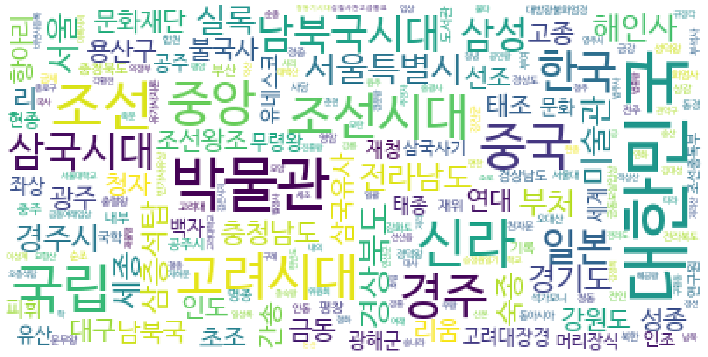
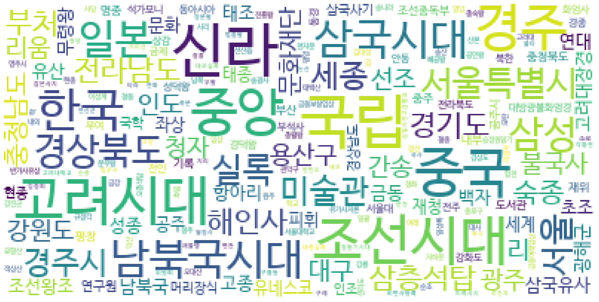
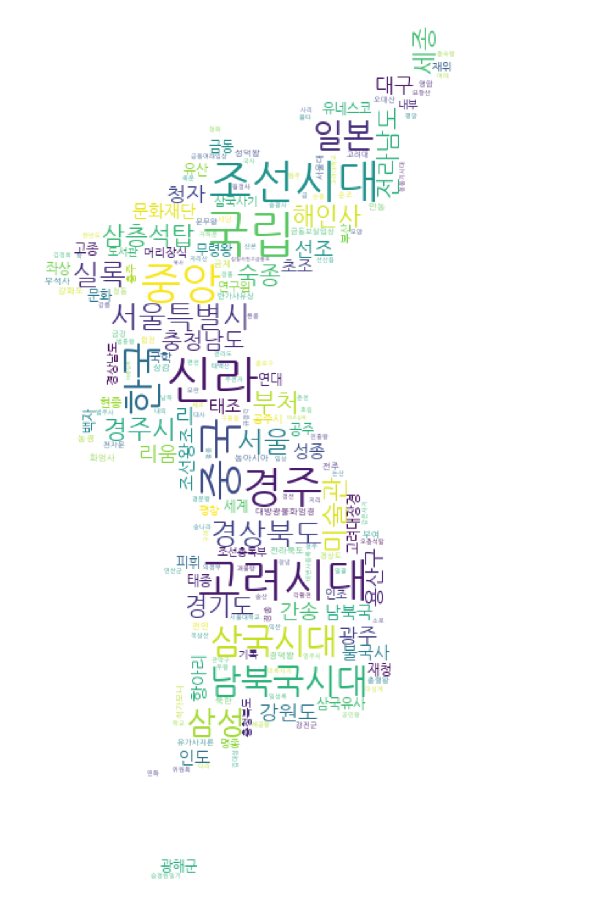
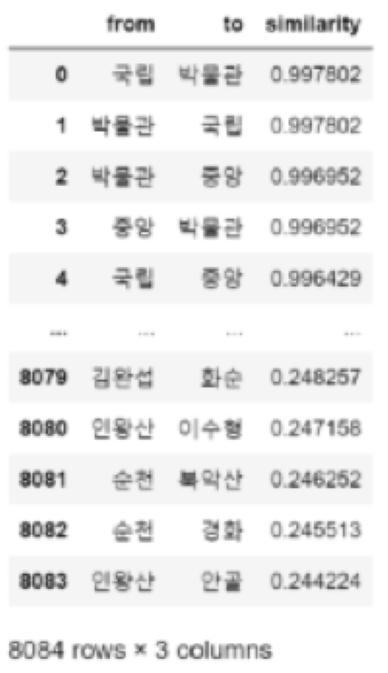

4. 텍스트 데이터 활용예시
팀케일리가 구축한 데이터셋의 활용 예시를 소개한다.
토큰화, 워드 임베딩을 거쳐 워드클라우드와 네트워크 그래프로 시각화하였다.
1. 텍스트 전처리
1) 토큰화(Tokenization)
워드 임베딩을 거쳐서 최종적으로 네트워크 및 워드클라우드 시각화를 구현하기 위해 최우선적으로 '토큰화'를 선행해주었다.
토큰화 과정은 크게 4단계로 진행해주었다.
Mecab
1차적으로 토큰화하는 과정에서 '한국어 형태소 분석기(KoNLPy)'의 한 클래스인, 'Mecab'을 사용했다. 이를 선정하기 전에 이 외에도 OKT, Kkma, Komoran, khaiii(Kakao Hangul Analyzer III) 등 여러 형태소 분석기를 시도했는데, 최종적으로 Mecab이 분석 시간이 가장 빨랐으며, 팀케일리 구축 데이터에서 명사를 가장 잘 살려 뽑아냈다고 판단해 해당 형태소 분석기를 채용했다. 아래 이미지는 팀케일리 구축 데이터에 적용한 형태소 분석기별 분석시간을 비교해놓은 표다.
.png)
불용어 제거
다음으로는 보다 정확하고 빠른 결과를 도출하기 위해서, 팀케일리가 직접 수작업으로 토큰화 결과를 보고 선별하여 만든 불용어 사전을 활용했다. 아래 이미지는 불용어 사전의 일부분이다.
토큰의 빈도수
불용어를 제거해준 후에, NLTK와 OKT를 사용하여 토큰화한 단어들의 빈도수를 확인해주었다. 참고로, 높은 빈도수를 보이는 토큰들에 대해서는 뒤에 워드클라우드를 통해 시각화해보았다.
한 단어 중 의미 없는 단어 제거
토큰화의 마지막 과정에서는 한단어로 분석되는 토큰들 중 불용어로 판단되는 토큰들을 제거해주었다.
예컨대, '및, 운, 정, 존' 등과 같이 그 의미가 크게 중요하지 않거나 품사가 조사인 토큰들을 제거했다.
단, 제거 과정에서 집중했던 부분은, 의미의 중요도를 따지고 제거하지 않을 토큰을 선별하는 것이었다.
대표적으로 '청, 명, 송, 당'과 같은 토큰은 중국 역사에 등장하는 왕조의 명칭이므로 제거 과정에서 제외했으며,
경서에 대한 학자들의 전통적인 주해 의미인 '전(傳)'이나 '배'의 의미를 지니는 ‘선(船)’과 같이 애매하다고 판단된 토큰들은 합의를 통해 결정했다.
아래 이미지는 토큰화 과정에서 판별했던 토큰 리스트이다.
2) 워드 임베딩(Word Embedding)
다음으로 토큰들에 대하여 벡터값을 부여하고, 토큰들 간의 유사도를 계산하기 위해 '워드 임베딩'을 진행해주었다.
GloVe
워드 임베딩 방법론에는 대표적으로 LSA, Word2Vec, FastText, GloVe 등이 있다. 그 중에서도 우리는 ‘GloVe(Global Vectors for Word Representation, GloVe)’를 채용했다. GloVe는 기존 예측 기반의 'Word2Vec'과 카운트 기반의 'LSA(Latent Semantic Analysis)'의 단점을 보완하여 성능이 우수하다는 강점을 지녔다. 그러나 사실 Word2Vec과 GloVe의 성능을 비교해보면, 모두 자체 성능이 빠르고 정확하기에 그나마 Word2Vec의 단점을 보완한 GloVe를 활용했다.
임베딩의 정확도 개선
GloVe를 통해 단어들의 임베딩 벡터 값들을 구했으며, 유사도를 평가해보았다.
그러나 예상밖에 서로 유사한 관계를 찾아볼 수 없는 토큰들이 상위에 높은 벡터 값을 가진 채 출력되어 나왔다.
뿐만 아니라, 토큰화한 후에 일부 토큰들 앞에 대괄호(‘[]’)가 지워지지 않는 등 통일성이 결여된 토큰이 생성되는 문제점들을 포착할 수 있었다.
즉, 임베딩 결과에 대한 정확성 및 신뢰성에 대한 문제를 발견할 수 있었다.
이 두 가지 문제를 타개하기 위해 가장 먼저 '토큰화 과정'을 다시금 살펴보았다.
아무래도 우리가 활용하려는 토큰들이 잘 정제돼있지 않기 때문에 발생한 문제라고 판단하여 실제로 코드를 다시금 수정하고, 필요하면 수작업도 진행해주었다.
결과적으로 토큰화 과정 정제를 통해 통일된 형태의 토큰을 생성할 수 있었으며 정확도를 끌어올릴 수 있었다.
2. 워드클라우드
1) 워드클라우드 개요
팀 케일리에서는 팀케일리 구축 데이터를 활용한 시각화의 한 예로 국보 워드클라우드를 제작했다.
이때 만든 워드클라우드는 모두 팀케일리 구축 데이터 중 국보 설명글 토큰화를 바탕으로 하며, 크게 ‘빈도수를 기반으로 한 것’과 ‘GloVe를 활용하여 단어 별 유사도를 활용한 것’ 두 가지가 있다.
먼저 빈도수 기반인 워드클라우드는 토큰화한 단어의 빈도수를 활용하여 워드클라우드를 만든 것이다.
이때 전체 설명글을 대상으로, 혹은 국보 개별을 대상으로 워드클라우드를 제작했다. 이 워드클라우드는 국보를 설명하는 글에서 등장하는 키워드의 중요도를 시각적으로 나타내었다는 데에서 의의가 있다.
뿐만 아니라 GloVe를 활용한 워드클라우드에 비해 단어 중요도에 대한 신뢰도가 훨씬 높다. 이 이유는 GloVe를 활용한 워드클라우드와 비교하며 설명하도록 하겠다.
반면, GloVe를 활용한 워드클라우드는 토큰화 결과물에서 뽑은 하나의 단어, 그리고 그 단어와 유사도가 높은 단어들을 활용해 워드클라우드를 만든 것이다. 이 워드클라우드는 단어 간 유사도를 가지고 워드클라우드를 만들었다는 점에서 의의가 있으나, 유사도가 높은 단어를 도출하는 과정에서 아쉬운 점이 있었다. 예를 들어 ‘허균’과 가장 유사한 단어 10개를 뽑아보았을 때 그 중에는 ‘뚜껑’도 있었다. ‘허균’과 ‘뚜껑’의 유사성은 설명글에서도 찾기 힘들었다. 팀케일리 구축데이터에서 1회 등장한 ‘허균’은 국보 103호인 ‘원주 법천사지 지광국사탑(原州 法泉寺址 智光國師塔)’ 설명글에서 법천사 설립시대를 기록한 것 같다고 나오는데, 이 설명글에서의 ‘뚜껑’은 ‘지광국사탑 내에서 발견된 사리공의 뚜껑’이 전부이다. 이러한 이유로 팀케일리는 글로브를 활용한 워드클라우드보다 빈도수를 기반으로 한 워드클라우드의 단어 중요도에 대한 신뢰도가 훨씬 높다고 판단했다. 그렇기에 아래 설명글은 빈도수 기반으로 만든 워드클라우드가 주가 될 것이다.
2) 워드클라우드 전처리 과정
워드클라우드를 만들기에 앞서 우선적으로 팀케일리 구축 데이터를 토큰화할 필요가 있었다. 이를 위해 크게 라이브러리를 활용한 토큰화와 불용어 사전 적용, 그리고 토큰화한 단어들의 빈도수를 세는 과정을 거쳤다. 보다 자세한 내용은 상단의 토큰화 과정을 참고하길 바란다.
3) 워드클라우드
워드클라우드의 경우 단어와 그 빈도수를 딕셔너리로 묶은 후 워드클라우드 라이브러리를 활용해 제작했다. 이때 전체 단어 빈도수를 활용한 것, 그리고 상위 3개 단어를 제외한 것, 마지막으로 mask를 이용한 것 세 가지를 만들었다.
먼저 전체 단어 빈도수를 활용한 워드클라우드는 위와 같다. 앞서 언급한 상위 3개 단어인 대한민국, 박물관, 조선은 다른 단어들에 비해 글자의 크기가 눈에 띄는데, 이는 단어들 간의 빈도수 차이가 크기 때문이다. 예로 상위 4번째인 ‘박물관’는 그 빈도수가 129이며 상위 8번째인 ‘중국’은 빈도수가 104인데, 이 두 단어 모두 상위 1번째인 ‘대한민국’ 빈도수인 231과 1.5~2배 가까이 차이가 난다.
다음으로 상위 3개 단어를 제외한 워드클라우드이다. 앞서 언급한 상위 3개 단어가 사라지고 새롭게 고려시대, 신라, 중국, 국립 등의 단어가 대두됨을 알 수 있다.
마지막으로 대한민국 지도 모양을 mask로 씌운 워드클라우드이다. 이 워드클라우드에 쓰인 데이터는 위와 마찬가지로 상위 3개 단어를 제외한 것이다.
3. 네트워크 그래프 시각화
1) 네트워크 그래프 시각화 개요
팀케일리가 구축한 데이터의 또 다른 활용 예시는 네트워크 그래프이다.
앞서 텍스트 전처리 과정에서 토큰화와 워드 임베딩을 시행했고, 그 결과물 속 단어들의 관계를 보고자 단어 간의 유사도를 구해 네트워크 그래프로 시각화했다.
네트워크 그래프로 시각화를 한 이유는 팀케일리가 구축한 데이터의 지형도를 보기 위해서다.
예를 들면 어떤 단어가 전체 데이터 중에서 의미적으로 중심에 위치한 단어인지, 또 어떤 단어들끼리 의미적으로 가까워 유사도가 높게 측정되었는지 알 수 있다.
즉 워드 임베딩의 결과를 한 눈에 볼 수 있다는 장점이 있다.

2) 제작 과정
네트워크 그래프를 그리기 위해 활용한 시각화 툴은 Pyvis 라이브러리다.
노드와 노드 사이의 엣지, 즉 단어 간의 관계를 효과적으로 보여주는 시각화 툴을 찾기 위해 Embedding projector 등 다양한 시도를 거쳤다.
그 중에서도 Pyvis는 그래프가 직관적이고, html 형식으로 변환이 쉽다는 점에서 채택되었다.
워드 임베딩을 통해 도출된 8084개의 유사도를 가진 단어들 중에서 유사도가 높은 순으로 500개만 추려 그래프를 그렸다.
단어의 개수를 조정해도 그래프의 전체적인 패턴은 유사했다.
3) 네트워크 그래프 시각화 결과
- 스크롤을 내리면 보이는 [physics]를 조절하면 그래프의 모양을 바꿀 수 있다. 원을 클릭하면 연결된 단어를 볼 수 있다.
그래프의 전체적인 형태를 보면 중심부에 유사도와 연결성이 높은 노드들이 위치해 있는 반면 주변부에는 그렇지 않은 노드들이 있다.
또한 주변부에 위치한 노드들은 대부분 중심부와 단절되어 있다.
가장 연결성이 높은 노드는 '대한민국'이며 '서울특별시', '박물관', '광주' 등의 단어와 의미적으로 가깝다.
더 나아가 중심부에는 '대한민국', '남북국시대', '삼국시대', '신라', '중국', '조선' 등 문화재를 설명하기 위해 필수적으로 자주 등장하는
지명, 시대, 소재지 등이 포함된 단어들이 많이 분포한다.
반면 주변부에는 역사적 인물, 문화재 이름이나 종류가 주로 분포하며, 노드 당 연결된 다른 노드의 개수가 매우 적다.
이렇듯 네트워크 그래프 시각화는 단어 간의 관계를 한 눈에 볼 수 있다는 점에서 팀케일리가 구축한 데이터의 활용 사례로서 의의가 있다.
하지만 이 사례에서 구한 유사도는 단순히 텍스트 내에서 동시에 등장한 단어들 사이에서 높게 도출되었을 확률이 높다는 점에서 한계를 가진다.
앞서 빈도수 기반 토큰화 방식이나 단어 수준의 임베딩을 사용했기 때문이다.
중심부에 지명이나 시대를 나타내는 단어가 위치하는 것도 텍스트 데이터 내에서 문화재를 설명하기 위해 가장 빈번하게 사용하는 단어였기 때문으로 보인다.
따라서 다른 토큰화 방식을 사용하거나 문장 수준의 임베딩을 시행하면 더 나은 결과를 도출할 수 있을 것으로 기대한다.
그래프를 발전시킨다면 여러 개의 중심부를 가지는 동시에 중심부와 주변부가 단절되지 않은 그래프가 만들어질 수 있을 것이다.